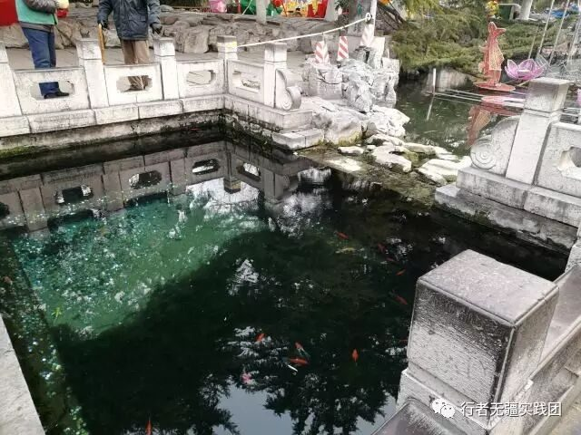
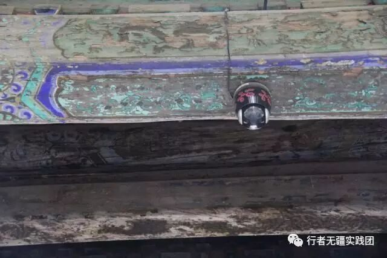
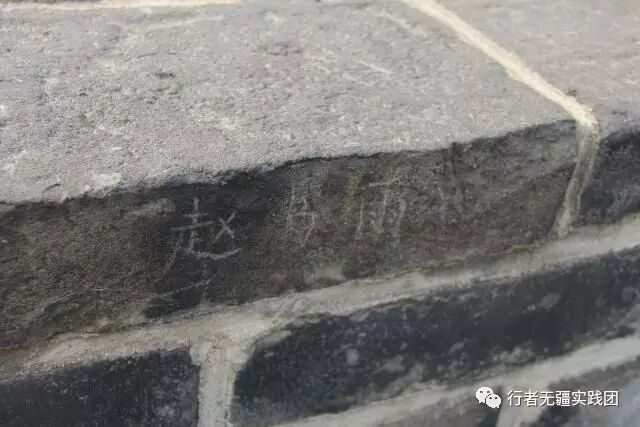
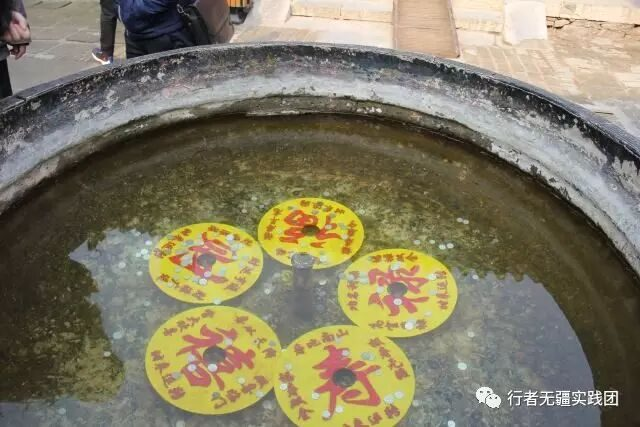

来自行者的第十二封信|文物的保护与修复

文物的保护与修复

文：张正
前一段时间，我们团队发起了一个文物景点的保护倡议书，内容大抵是倡导人们在旅游时，文明旅游，避免对景区古建筑文物等有历史文化价值的物品进行认为的损坏。可能一个月前的我觉得，现在都是文明社会了，不随手乱扔垃圾了，不随地吐痰了，乱刻乱画等损坏文物的行为可能也没有了吧；长城上的留迹应该没有想象中的那么多吧；不是每个赑屃的鼻孔、每个狮子的绣球、每个麒麟的头顶都被摸的光秃秃油亮亮的了吧。事实证明，我的心甘情愿输的一败涂地，输给了那些我觉得看起来是文明人的游客身上。

撇开上话先不谈，我们来说点别的。
看了这么多文化圣地，令我印象最深的不是别的，是那古殿主梁上安装的监视器，壁画的修复过程演示，还有红卫兵在石碑上制造的创伤和一个大大的“留”字。可能我的思想比较偏激 ，但是我觉得，对文物的维修维护以及假情假意的保护实际上就是对文物的破坏。修复过的文物加入了现代的工艺，已经很难说它是一个纯粹的古代历史文化的缩影了。用现代化工工艺研制出的颜料盖过了褪色的古代先人手工制作出的水彩，用城外八里坡的长了二十年大槐树替代了朽坏的南宋时期扬州城里运来的白杨主梁，这对文物古迹无疑就是一种亵渎。我们对文物保护的界定是什么，或者是说我们对文物的保护修复这一行为本身就是一种破坏？

我个人给出了上述两个问题的答案：是景区内的商业行为引导了我们的价值观，从而灌输了这些思想，也是官方做出文化商业化的决定，才维护开发这些古迹。
其实我们的文化不该受到这样的摧残。我们完全可以避免这些不必要的文化浪费。
当然了，我们不能因为这些就说文化商业化是错的，盲目的禁止文物古迹开发是典型的因噎废食。
说了这么多，其实刚刚那些我刚去景区时所想所感看起来有些像嫉世愤俗的文艺青年不考虑全局而对玉璧之瑕所做出的无脑的抨击。凡是问题都要辩证的全面的去看待讨论，抛开客观去看待问题无疑就是在耍流氓。
官方有没有错呢？有错。但是是避免不了的，这些对文物古迹所做的损坏，比起开发这些所获得的价值简直微不足道。虽然说损坏程度还有进一步缩小的空间。


说了这么多，其实我的真正意思是：相对于倡导我们游客个人来说，官方采取行动来保护文物古迹会更加行之有效一些。所以我们的倡议书不仅仅针对个人，也包括各种相关官方组织机构。可喜的是，官方已经意识到了这一点，隔离栏、防鸟网，石砖地上铺地毯，台阶旁贴防滑条，这些早先年在景区都不会见到的家伙事儿，现在在各地的景区已经陆陆续续的开始设置起来。虽然现在各种设施还不是很周到很完善，但是我们已经初步看到了成果。
希望在我们游客和官方共同努力维护下，我们的后辈看到的景色和我们现在所看到的能一模一样。